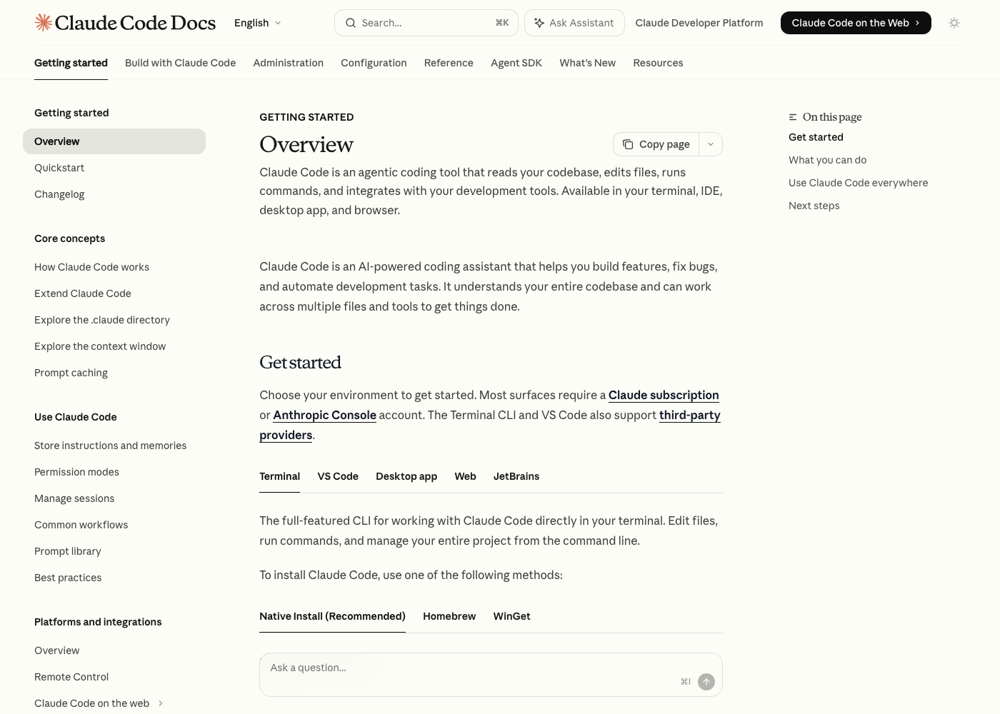
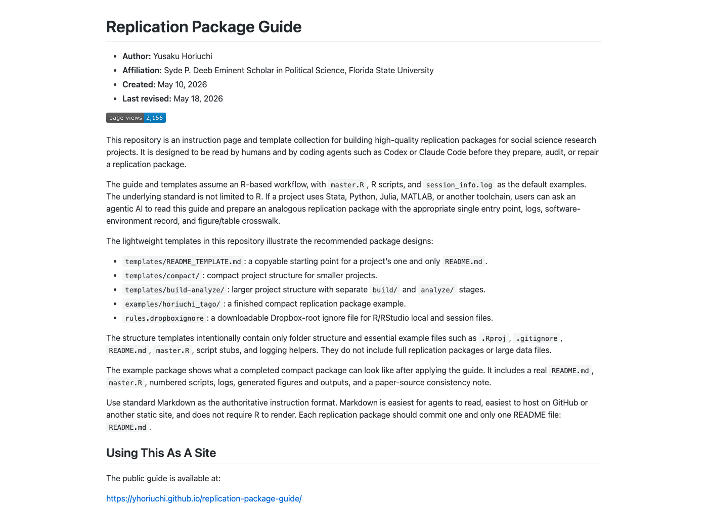
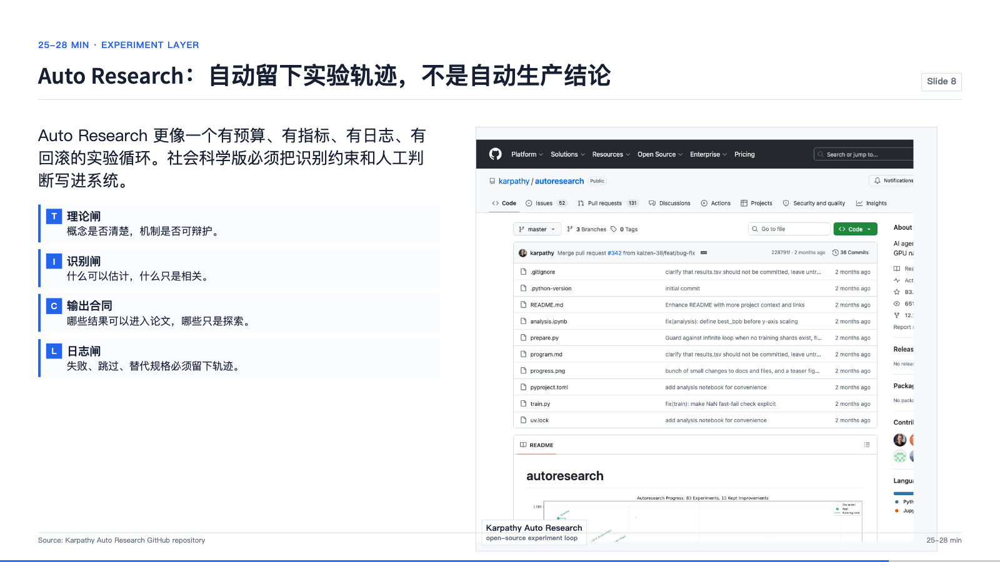
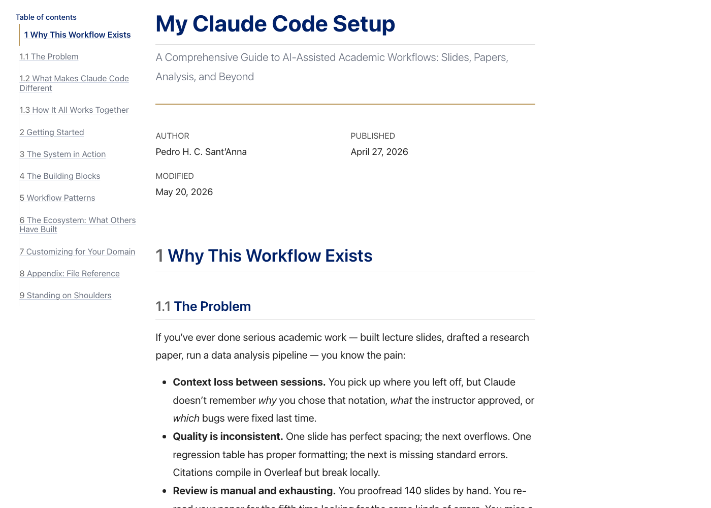
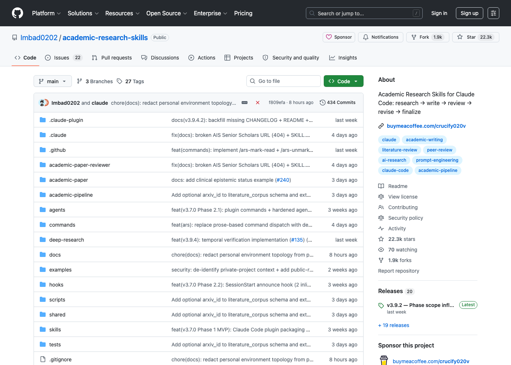
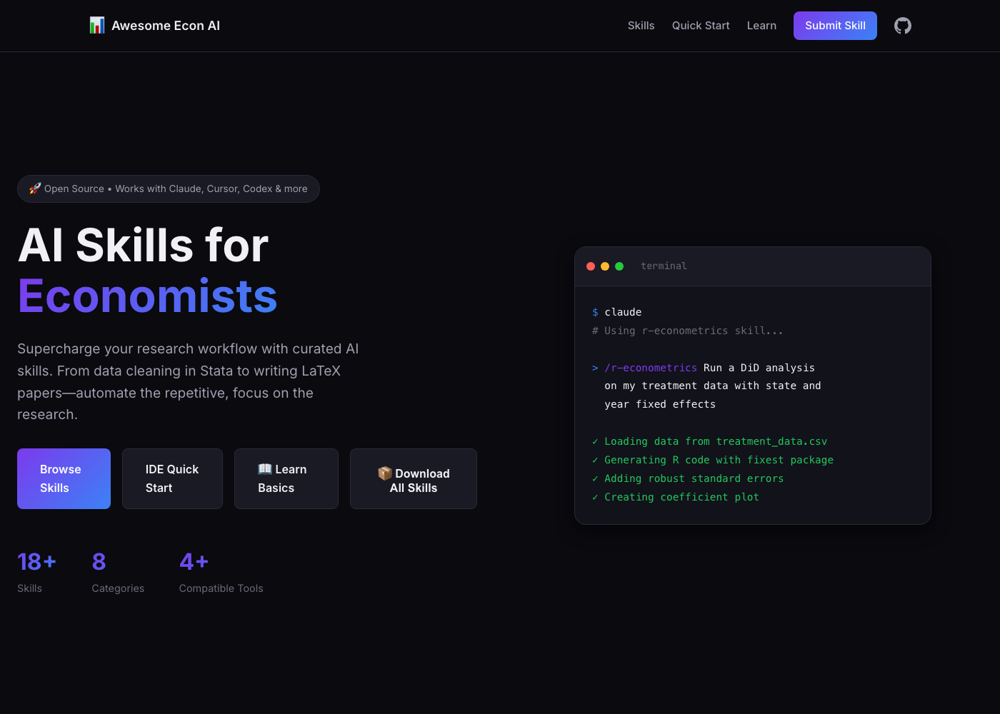
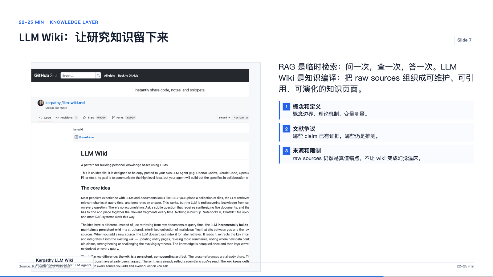
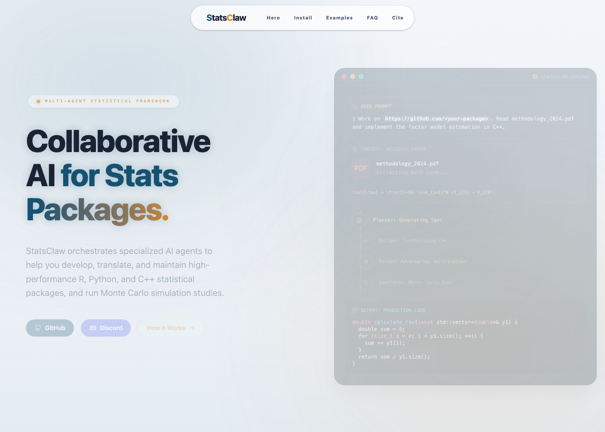

Tongji AI4SS · 30 minutes
AI Agents 作为
社会科学研究基础设施
从 agent loop 出发，讲清楚为什么 2026 年的关键问题不是“AI 会不会写论文”，而是研究流程怎样变得可执行、可交接、可审计。
郑思尧 · 2026-05



autonomy spectrum
从 ChatGPT 到 AGI：AI 能力也有“自动驾驶分级”
这页的重点是例子：从大家熟悉的聊天机器人，到能用工具、能进 workspace 的 agent，再到仍属目标的 AGI，差别在于系统能承担多少连续行动。
越往上，越要问：谁监控、谁接管、谁负责？无人：仍是目标状态
全条件、全道路由系统驾驶。
AGI / 完全 AI 智能体
高度自治、跨多数经济任务；不是当前产品。
脱脑：限定区域兜底
Robotaxi 在服务区内接近“乘客模式”。
消费级 Agent
能替用户查资料、浏览网页、执行多步任务。
脱眼：条件自动化
系统驾驶，但边界外要求人准备接管。
工具型 AI 应用
模型接入搜索、图像生成、文档库和数据分析。
脱手：驾驶辅助
系统控制方向和速度，人仍然看路并负责。
多模态 / 办公副驾
能读图、读文件、听说对话，但人持续判断。
脱脚：局部辅助
定速、跟车或车道保持；人完成驾驶任务。
聊天机器人
回答、改写、摘要；任务状态仍停在人手里。
agent loop
什么是 Agent Loop：ReAct
传统 LLM 调用
LLM 作为一次生成器：输入一次，输出一次。
Input / Prompt
用户给出一个问题、任务或文本。
LLM
single forward pass
Output / Answer
模型生成一次回答，任务状态通常停在对话里。
ReAct Agent Loop
Agent 也有输入和输出；变化在于中间多了一个带 LLM 的行动循环。
Input / Goal
用户给出目标、约束和上下文。
Reason + Act
Thought / Reason
LLM 形成计划，解释当前证据和下一步。
Action / Tool
搜索、运行命令、读文件、调用 API。
Environment
网页、日志、脚本结果、文件变化进入下一轮推理。
State update
保留进度、错误、约束和未决问题。
Output / Artifact
交付回答、文件修改、分析结果或下一步计划。
rules and memory
真正的入口：把规则写成 agent-readable Markdown
AGENTS.mdCLAUDE.md同一种入口
不管叫 Agent markdown 还是 Claude markdown，本质都是给 agent 的项目合同。
Rules项目边界
研究完整性优先；用 python3；先验证路径和依赖；不要越过明确范围。
Memory跨轮上下文
记住本轮决定：AI 例子要消费级；logo 不能被截断；每次改版都看 16:9 预览。
Agent 不是只靠 prompt 工作；它需要一个项目内的入口文件。
local example
例子：我们自己的 AGENTS.md 就是项目合同
AGENTS.md excerpt for this workspace
# AGENTS.md ## Priorities - Optimize for research integrity, reproducibility, traceability, and write-ready outputs. - Keep assumptions explicit. ## Hard Rules - When Adrian asks to show or spot-check, include visible content or command output. - Never change display or monitor settings. ## Working Style - Stay within the explicit scope of the request. - Answer computable questions by inspecting files. - Verify names, paths, distributions, and encodings. ## Environment - Use python3, not python. - Quote paths with spaces. - Never run heavy jobs directly on HPC login nodes.
优先级
先保护研究完整性、可复现性和可交付性，而不是先追求快。
硬边界
哪些事绝对不能做，哪些输出必须给可见证据。
工作方式
先看文件和数据，再回答；不要靠印象猜路径和内容。
运行环境
把 python3、空格路径、HPC 登录节点这些坑提前写死。
研究翻译
这不是工程配置，而是把“作者才知道的项目纪律”外置给 agent。
practical entry
今天就能做：让 agent 读一个研究文件夹

最实用的第一步不是让 agent 写论文，而是让它先做只读体检。
first prompt
一个可以直接复制的只读体检 prompt
First prompt 的目标不是直接产出结论，而是产出项目地图和风险清单。
Read this research project as a read-only research assistant. Do not modify files. Return: 1. project map 2. data-code-output crosswalk 3. commands to regenerate key outputs 4. uncertainty / risk list 5. top 3 next actions
rules / workflow / skills
规则、工作流、技能：让 agent 先别乱来
社科 agent 的第一步不是更自由，而是更有约束。


tools / knowledge / experiment / audit
工具、知识、实验、审计：能做事，也能被追责
Tools
files, terminal, browser, data

Knowledge
compiled knowledge layer
Experiment
search with logs

Audit
validation-aware workflow
Agent 的行动能力和可信度必须一起设计。
AI4SS translation
AI4SS 的前沿：研究流程本身被基础设施化
StatsClaw
把统计软件从“跑结果”推进到 validation-aware workflow：模型、诊断、错误和报告需要一起被检查。
Academic Research Skills
把研究流程拆成可复用技能：读文献、写作、审稿、修改，不再只是一次性 prompt。
Awesome Econ AI Stuff
学科资源开始围绕任务组织：工具、案例、技能、工作流，构成 agent 可读的入口。
AI4SS 的资产，不是某个模型，而是能被 agent 读懂的研究制度。
knowledge layer
LLM Wiki：把杂乱语料整理成可维护 wiki
PDF papers
论文、报告、replication package，格式不一。
Web articles
网页剪藏、博客、新闻、项目 README。
Book chapters
章节笔记、人物、主题、情节线。
Meetings / Slack
会议记录、聊天线程、客户访谈。
Loose notes
临时想法、问题清单、待验证判断。
Entity pages
人物、组织、项目、数据集，各自有页面。
Concept pages
概念定义、边界、相近术语、争议。
Topic synthesis
把多个来源综合成一个持续更新的解释。
index.md
目录、摘要、链接，让 agent 先导航再阅读。
log.md
记录 ingest、query、lint，保留知识库演化时间线。
LLM Wiki ingest
新语料怎么被吸收：更新多处页面，而不是丢进索引
New source
一篇新论文 / 一个访谈 / 一段会议记录进入 raw/。
Claims
有哪些新判断？支持、反驳、还是补充？
Entities
涉及哪些人物、组织、案例、数据集？
Concepts
改变了哪些定义、分类或机制链条？
Conflicts
有没有和旧页面矛盾、过时或需要标注不确定？
1. read source
先读原文，保留来源路径和引用锚点。
2. write source page
生成摘要、关键证据、限制和可追问问题。
3. update linked pages
同步 entity、concept、topic synthesis。
4. flag contradictions
标出新旧说法冲突、过时判断和待复核 claim。
5. append log
在 log.md 记录这次 ingest 触碰了哪些页面。
What changes in the wiki
+ raw/paper-2026.md sources/paper-2026-summary.md entities/NotebookLM.md concepts/RAG.md concepts/knowledge-compilation.md topics/personal-knowledge-base.md index.md log.md FLAG: new source challenges old claim FLAG: add follow-up question
original examples
LLM Wiki 原作者例子：同一套机制可以跨场景
experiment layer
Auto Research：先看原始优化图
这张图才是 Auto Research 的入口：灰点是被丢弃的尝试，绿点是被保留的改进，绿线是 running best。

Auto Research loop
Auto Research：伪代码和循环比概念更清楚
repo anatomy
Auto Research 的 repo 结构：把自由度关进盒子
closing lift
社会科学不是 AI 自动化的对象，而是 agent system 的设计语言
Agent systems 里会有异质行动者、网络依赖、策略互动、制度约束、分布不稳定。这些正是社会科学长期研究的问题。
contact
谢谢
更多资料和示例会持续更新，欢迎关注：